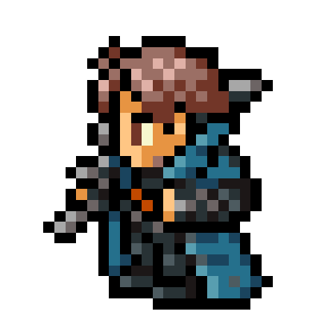

ホームに戻る

Terms of Use
利用規約
読み込み中...
# C'zaha Chell tia サービス利用規約 本規約は、C'zaha Chell tia（以下「当方」といいます）が独自の理念に基づき企画、開発、管理および提供する各種サービス、ソフトウェア、コンテンツ、ウェブサイト、Discordサーバー、ゲームサーバー、開発者向け環境ならびに関連製品（以下、総称して「本サービス」といいます）の利用条件を定めるものです。 ユーザーは、本サービスを利用することにより、本規約の内容を確認し、適用される範囲でこれに同意したものとみなされます。本規約に同意できない場合、ユーザーは本サービスを利用することはできません。 --- ## 第1条（規約の適用および変更） 1. 本規約は、本サービスを利用するすべてのユーザー、参加者、登録者および本サービスにアクセスする者に適用されます。 2. 本サービスの一部に個別規約、利用条件、ライセンス、運営ルールまたはガイドラインが定められている場合、当該サービスについては個別の定めも適用されます。 3. 個別規約と本規約の内容が矛盾する場合、当該サービスについて個別規約が優先される旨が明示されているとき、または個別規約の性質上その適用が合理的であるときは、個別規約を優先します。ただし、法令に反する内容やユーザーに一方的に不利益を課す内容が当然に有効となるものではありません。 4. 当方は、民法第548条の4その他関係法令に従い、本規約を変更することがあります。 5. 規約を変更する場合、当方は変更内容、変更後の規約および効力発生日を、公式サイト、関連サービスまたは当方が適切と判断する方法で周知します。 6. 変更後の規約は、法令上認められる場合を除き、周知した瞬間に無条件で遡及適用されるものではありません。効力発生日以降の利用について、変更内容および法令に従って適用されます。 7. ユーザーが変更後の規約に同意できない場合、本サービスの利用を中止することができます。 --- ## 第2条（未成年者の利用と「家族の共創」） 1. ユーザーが未成年者である場合、法令上必要となるときは、親権者その他の法定代理人の同意を得たうえで本サービスを利用するものとします。 2. ユーザーは、年齢制限その他各サービスが定める利用条件を遵守しなければなりません。 3. **【当方からの招待】** 本サービスは、次世代を担う若い創造性を最大限に歓迎し、支援することを理念の一つとしています。 保護者の皆様におかれましては、単に利用を許可するだけでなく、ぜひお子様と共に本サービスの世界をご体験ください。 本サービスは、当方が学生時代に抱いた「既存システムへの疑問」を徹底的に問い詰め、自らの手で形にしたところから始まりました。親子で新しい技術に触れ、対話し、時には共に悩みながら、不完全なシステムを理想の形へと近づけていくこと。それが最高にエキサイティングな「家族の冒険」になると当方は考えています。 --- ## 第3条（知的財産権の帰属および他社・他ブランド規約の適用） 1. 当方が独自に制作・開発した文章、プログラム、ソースコード、画像、音楽、デザイン、資料、ロゴ、その他のコンテンツに関する著作権、商標権その他の知的財産権は、当方または正当な権利を有する第三者に帰属します。 2. 本サービスに第三者の著作物、オープンソースソフトウェア、外部ライブラリ、ゲームエンジン、フォント、画像素材、音楽素材その他第三者が権利を有するものが含まれる場合、それらの権利は各権利者に留保されます。 3. Unreal Engine、Minecraftその他の第三者製品・プラットフォームに関する素材、アセット、プログラム等については、それぞれの権利者が定める利用規約およびライセンスが適用されます。当方は、第三者の権利を当方に帰属するものとして主張しません。 4. 各ブランドおよび関連サービスに関する権利・コンテンツ・利用条件は、次の各ブランドが定める個別規約およびライセンスに従います。 - Japaniture - MTR Japan Nexus（以下「MJX」といいます） - Japan MTR Center（以下「JMC」といいます） - Yunzhu Transit Extension（以下「YTE」といいます） 5. 前項の各ブランド・サービスに独自の規約が存在する場合、当該サービスの利用についてはその個別規約が適用されます。 6. 当方または各権利者の許可なく、権利者の著作権その他の権利を侵害する複製、転載、改変、再配布、販売または営利目的での利用を行ってはなりません。 7. 本条は、適用されるオープンソースライセンスその他の第三者ライセンスによって認められた利用者の権利を制限するものではありません。 --- ## 第4条（Minecraft MODデータおよび開発成果物の取り扱い） 1. 当方が提供するMinecraft向けMOD、プログラム、データ、アセットおよび関連成果物については、配布ページ、リポジトリ、同梱文書または個別規約に別段の定めがない限り、無断での二次配布を禁止します。 2. 前項の二次配布には、次の行為を含みます。 - 配布ファイルの再アップロードおよび転載 - 自身が管理するサーバーやウェブサイトでの無断公開 - 他のMODパック、配布物または製品への無断同梱 - 当方の許可なく第三者へ配布する行為 3. ただし、MTR Japan NexusおよびJapan MTR Center等、当方が別途利用を認めたサービス・サーバーについては、当該許可または個別規則の範囲内で利用できます。 4. 当方が個別のリポジトリ、配布ページまたはプログラムにおいてMIT License、GNU General Public License（GPL）その他のオープンソースライセンスを適用している場合、当該ライセンスの条件が優先して適用されます。 5. オープンソースライセンスが適用される成果物について、ユーザーは当該ライセンスで認められた複製、改変、再配布その他の行為を行うことができます。ただし、ライセンスに定められた著作権表示、ライセンス文、ソースコード提供条件その他の義務を遵守しなければなりません。 6. ユーザーは、次の行為を行ってはなりません。 - 他者の開発成果物を自身の著作物であると偽る行為 - 著作者表示やライセンス表示を不正に削除・改変する行為 - 適用されるライセンスに違反する配布・利用 - 第三者の権利を侵害する改変または配布 - 本サービス、第三者または他の利用者に重大な損害を与える目的での悪質な改変・利用 7. 個別のアセットやプロジェクトに独自の利用条件が設定されている場合、当該条件に従うものとします。ただし、当該条件によって、適用されるオープンソースライセンス上認められた権利を一方的に取り消すことはできません。 --- ## 第5条（禁止事項） ユーザーは、本サービスの利用にあたり、次の各号に該当する行為を行ってはなりません。 1. **政治・宗教・思想等の執拗な勧誘および宣伝** 本サービスの趣旨に反して、特定の政治的思想、宗教、主義主張等について、他の利用者に対する執拗な勧誘、布教、宣伝または強制を行うこと。 なお、ユーザーが特定の思想、信条、宗教または政治的立場を有すること自体を禁止するものではありません。 2. **不正アクセスおよび業務妨害** 不正アクセス、脆弱性の悪用、DDoS攻撃、過度な自動アクセス、ボットやクローラーを用いたサービスへの妨害、その他当方または第三者のシステムに損害を与える行為。 3. **荒らし行為およびコミュニティ運営妨害** 本サービスのウェブサイト、フォーム、Discordサーバー、ゲームサーバー、開発環境その他の機能に対する荒らし、スパム、嫌がらせ、管理者の正当な制止を無視した迷惑行為、その他コミュニティの秩序や健全な運営を著しく妨げる行為。 4. **関連・協力先等における問題行為** 当方が管理、運営、補助、提携、開発協力その他の形で関与するサーバー、コミュニティ、Webサービス等において、荒らし行為、重大な迷惑行為、不正行為または重大な規約違反を行うこと。 5. **外部サーバー・外部コミュニティにおける問題行為** MGSA加盟サーバーに限らず、MGSAに加盟していないサーバー、開発者コミュニティ、Discordサーバー、オンラインコミュニティ、ゲームサーバーその他の外部サービスにおいて、次の行為を行うこと。 - 荒らし、スパム、嫌がらせ、脅迫、妨害その他の重大な迷惑行為 - 管理者の正当な制止を無視した継続的な迷惑行為 - 不正アクセス、データ破壊、システム妨害その他のセキュリティ上の問題行為 - 他の利用者やコミュニティに重大な損害を与える行為 - その他、当方が本サービスの安全性や運営に重大な影響を及ぼすと合理的に判断する行為 外部コミュニティでの問題行為は、本サービスにおける参加適格性および安全性を判断するための事情となる場合があります。 6. **外部での処分歴および注意喚起に関する情報** 外部サーバーやコミュニティから、特定の利用者について重大な問題行為、処分歴、再発のおそれまたは安全上の懸念に関する情報提供や注意喚起を受けた場合、当方はその情報を本サービスにおける参加適格性・利用制限の判断材料とすることがあります。 ただし、情報提供を受けたことのみをもって、当該情報の内容が真実であると確定するものではありません。当方は、情報の内容、提供元、根拠、重大性および本サービスへの影響を考慮します。 7. **権利侵害および信用毀損** 当方または第三者の著作権、商標権、プライバシーその他の権利を侵害する行為、虚偽の情報を流布する行為、またはC'zaha Chell tiaおよび関連する名義であるAeforiaの信用・名誉を不当に毀損する行為。 8. **法令違反および公序良俗に反する行為** 日本国の法令、条例その他適用される法令に違反する行為、犯罪行為または公序良俗に反する行為。 9. **運営上の安全を脅かす行為** 他の利用者、運営関係者、開発者または本サービスの安全性を著しく脅かす行為、ならびに本サービスの継続的な運営に重大な支障を与える行為。 10. **その他の不適切な行為** 前各号に準ずる行為、または本サービスの目的、利用環境および安全性に照らして当方が合理的な理由に基づき不適切と判断する行為。 --- ## 第6条（虚偽申告および違反行為への対応） 1. ユーザーは、所属団体、利用資格、過去の処分歴その他、当方が本サービスの利用判断に必要とする事項について、正確な情報を提供するものとします。 2. ユーザーが意図的に虚偽の情報を申告した場合、または禁止事項に該当する事実を隠して本サービスを利用した場合、当方はその内容および影響を考慮し、アカウント停止、利用契約の解除、参加拒否その他必要な措置を講じることができます。 3. 虚偽申告や規約違反によって当方または第三者に損害が発生した場合、当方は法令に従い、損害賠償請求その他の法的措置を検討することがあります。 4. 犯罪行為またはその疑いがある行為については、必要に応じて警察その他の関係機関への相談・通報を行うことがあります。 5. 本条は、虚偽申告があったことのみをもって、直ちに特定の犯罪が成立することを意味するものではありません。刑事上・民事上の責任は、適用される法令および個別の事実関係に基づいて判断されます。 --- ## 第7条（法定代理人による対応および関係機関との連携） 1. 当方の運営主体または制定者が未成年者である場合、法令上必要な法律行為、契約、紛争対応その他の手続については、法定代理人その他適切な権限を有する者を通じて対応することがあります。 2. 本サービスの運営に関する問い合わせ、交渉、紛争および法的手続については、必要に応じて法定代理人または当方が指定する適切な担当者を通じて対応します。 3. 本サービスに対する不正アクセス、サイバー攻撃、脆弱性の不正利用その他のセキュリティ上の問題が発生した場合、当方は事案の内容に応じて、IPA（独立行政法人情報処理推進機構）、警察その他の関係機関に相談・報告することがあります。 4. セキュリティ上の事案について関係機関に情報を提供する場合、当方は法令に従い、必要な範囲で事実関係、技術的証拠および関連情報を取り扱います。 5. IPAは情報セキュリティに関する相談・情報提供等を行う機関であり、警察その他の法執行機関とは役割が異なります。当方は各機関の役割に応じて適切に連携します。 --- ## 第8条（AI倫理ポリシーおよびコンテンツの制限） 1. ユーザーは、本サービスを利用して、法令に違反するコンテンツ、他者の権利を侵害するコンテンツ、性的搾取に関するコンテンツ、児童の性的虐待に関するコンテンツ、その他本サービスの安全性や運営方針に反するコンテンツを作成、送信、公開または共有してはなりません。 2. 当方は、性的・不適切なコンテンツの生成等による規約違反リスクの低減、システム負荷の管理および純粋なテキスト・ロジック体験の維持を目的として、当方が提供する本サービスにおいて画像生成機能を提供しない方針とします。 3. 外部サービスが提供するAI機能を利用する場合、ユーザーは当該外部サービスの利用規約およびポリシーにも従うものとします。 4. 当方は、本条に違反するコンテンツまたはその疑いがあるコンテンツについて、削除、非公開化、利用制限その他必要な措置を講じることができます。 --- ## 第9条（反社会的勢力の排除） 1. ユーザーは、自身が暴力団、暴力団員、暴力団準構成員、暴力団関係企業、総会屋等、その他これらに準ずる反社会的勢力に該当しないこと、および反社会的勢力の維持・運営に関与していないことを表明するものとします。 2. ユーザーは、反社会的勢力に対する資金提供、便宜供与その他の関与を行わないものとします。 3. ユーザーが前各項に違反したことが確認された場合、または信頼できる情報に基づきその疑いが生じ、本サービスの安全な運営を維持するために必要と当方が合理的に判断した場合、当方は利用停止、参加拒否、契約解除その他必要な措置を講じることができます。 4. 前項の措置は、情報の内容、信頼性、重大性および法令上の制約を考慮して実施します。 --- ## 第10条（退会・アカウント解除・参加拒否および予防的利用停止措置） ### 1. ユーザーによる退会 ユーザーは、次の方法により本サービスを退会することができます。 - **Webサービス・アカウントの退会：** 当方が指定する手続またはコンタクトフォーム等から申請することにより、アカウントの解除を求めることができます。 - **Discordコミュニティの退会：** Discordサーバーについては、ユーザー自身が当該サーバーから退出することにより、通常の参加状態を終了できます。ただし、アカウント情報その他のデータの削除が必要な場合は、別途所定の手続が必要となることがあります。 - **その他のサービス：** 各サービスが定める退会・利用終了の手続に従うものとします。 ### 2. 自主退会後の再登録・再参加 1. ユーザーが規約違反等による強制措置を受けることなく、自主的に退会した場合、当方は再登録・再参加の申請を受け付けることがあります。 2. 自主退会したユーザーの再参加を一律に禁止するものではありません。 3. ただし、退会後に新たな問題行為が確認された場合、過去の処分が有効に継続している場合、または本サービスの安全な運営に支障があると合理的に判断される場合、再参加を認めないことがあります。 ### 3. 当方による利用停止・参加拒否・予防的BAN 1. 当方は、ユーザーまたは参加希望者が次の各号のいずれかに該当すると合理的に判断した場合、事前の催告なく、アカウントの停止、利用制限、利用契約の解除、参加拒否、アクセス遮断、BANその他必要な措置を講じることができます。 2. 前項の措置は、対象者が本サービスに現在参加・登録している場合に限らず、過去に参加・登録していた場合、または一度も参加・登録したことがない場合にも適用されることがあります。 3. 当方は、本サービスの安全性を確保するため、将来の参加・登録を事前に拒否することができます。これには、事前BANおよび予防的BANを含みます。 4. 措置の内容および期間は、問題行為の重大性、再発可能性、被害の程度、情報の信頼性、本サービスへの影響その他の事情を考慮して判断します。 5. 予防的な措置は、被害の拡大を防止するために必要な場合、事実関係の最終確認に先立って実施することがあります。その場合、当方は必要に応じて事後確認を行い、措置の継続、変更または解除を判断します。 ### 4. 外部サーバー・コミュニティからの注意喚起および情報連携 1. 当方は、MGSA加盟サーバーに限らず、MGSAに加盟していないサーバー、開発者コミュニティ、Discordサーバー、ゲームサーバー、オンラインコミュニティ、サービス運営者その他の関係者から、特定の利用者に関する注意喚起、問題行為の報告、処分歴、セキュリティ上の懸念その他の情報提供を受けることがあります。 2. 当方は、前項の情報提供を受けた場合、提供元、情報の具体性、客観的な根拠、処分の経緯、問題行為の重大性、再発可能性および本サービスへの影響を考慮し、必要な確認を行ったうえで、当方独自の判断により対応を決定することができます。 3. 前項の判断にあたっては、当該問題行為が本規約に個別具体的に記載されているか否か、対象者が本サービスに参加したことがあるか否か、または対象者が現在本サービスに参加しているか否かを問いません。ただし、措置は本サービスの安全性および健全な運営を確保するために必要かつ合理的な範囲で行います。 4. 当方は、外部サーバー・コミュニティ等において実施された警告、利用制限、一時BAN、永久BAN、参加拒否その他の処分内容を、本サービスにおける処分判断の参考として取り扱うことができます。 5. 当方は、外部から提供された処分内容や注意喚起を、本サービス側の処分内容に反映・同期することがあります。この場合の同期とは、外部の処分情報を当方の判断材料とし、本サービス側でも同等または相当する措置を検討・実施することをいいます。 6. 外部の処分内容を参考にする場合であっても、当方は当該処分を無条件に自動適用するものではなく、本サービスの運営方針、提供された情報の信頼性、措置の相当性および適用法令を考慮して独自に判断します。 7. 外部から重大な問題行為に関する具体的な注意喚起があり、被害の拡大防止または本サービスの安全確保のために必要と認められる場合、当方は対象者の参加前であっても参加拒否または予防的BANを実施できます。 8. 前各項の措置は、MGSA加盟サーバー以外からの情報提供についても適用されます。 ### 5. MGSA加盟サーバーとの連携に関する特則 1. MGSA加盟サーバーにおける問題行為や処分情報については、前項の外部情報連携に加えて、MGSAの加盟規定および当方がMGSAとの間で締結する正式な連携合意がある場合、その合意の範囲内で処分情報の共有・連携を行います。 2. 当方がMGSAとの正式な連携合意を締結していない段階では、MGSA全体の連動処罰制度に基づく権限を有するものとして取り扱いません。 3. 前二項にかかわらず、MGSA加盟サーバーから提供された情報について、当方が独自に必要性・相当性を判断し、本規約に基づいて当方のサービス内で利用制限や参加拒否を行うことは妨げられません。 4. MGSAとの正式な連携合意が成立した場合、当方は当該合意およびMGSAの適用規則に従い、処分情報の連携や同期を実施します。 ### 6. MJXその他の個別規則を有するサービスに関する特則 1. MTR Japan Nexus（MJX）、Japan MTR Center（JMC）その他独自の運営規則を有するサービスについては、第3条に基づき、当該サービスの個別規約・運営規則が適用されます。 2. 本規約に基づく参加拒否・利用制限等の措置を当該サービスに適用する場合、当該サービスの個別規約および運営権限の範囲に従って実施します。 3. MJXその他のサービスがMGSA加盟サーバーである場合、MGSAとの正式な連携合意および加盟規定が適用される範囲で、MGSAとの処分情報連携を行うことがあります。 4. MGSAとの正式な連携合意がない場合であっても、当該サービスの運営主体が独自に判断することを妨げるものではありません。 ### 7. 措置の対象となる事由 当方は、次の各号のいずれかに該当すると判断した場合、利用停止、参加拒否、BAN、予防的BANその他必要な措置を講じることができます。 ① 本規約または各サービスの個別規約に違反したとき。 ② 登録情報、所属、利用資格、処分歴その他重要な事項について、意図的な虚偽申告を行ったとき。 ③ 第5条に定める禁止事項に該当する行為を行ったとき。 ④ 外部サーバー・コミュニティ等において重大な問題行為を行い、その事実が信頼できる情報や客観的な資料によって確認されたとき。 ⑤ 外部サーバー・コミュニティ等から重大な注意喚起または処分情報の提供を受け、本サービスの安全性を確保するために措置が必要と合理的に判断したとき。 ⑥ 第9条に定める反社会的勢力の排除に関する事項に該当するとき。 ⑦ その他、本サービスの安全性、健全性または継続的な運営に重大な支障を与えるおそれがあると当方が合理的に判断したとき。 ### 8. 通知・理由の説明・再確認 1. 当方は、利用停止、参加拒否、BANその他の措置を実施した場合、必要に応じて、DM、メール、システム通知その他適切な方法で対象者に通知することがあります。 2. セキュリティ上の理由、第三者の個人情報保護、調査への影響その他正当な理由がある場合、当方は処分理由や情報提供元の詳細を開示しないことがあります。 3. 当方は、すべての措置について個別の異議申立て手続を常に提供する義務を負うものではありません。ただし、情報の誤りが判明した場合、重大な事実誤認が疑われる場合、または措置の継続が不相当となった場合には、必要に応じて再確認を行うことがあります。 4. 本項は、法令上認められるユーザーの権利や、当方が法令上負う義務を排除するものではありません。 ### 9. 処分情報および個人情報の取り扱い 1. 当方は、外部サーバー・コミュニティ等から受領した注意喚起、処分歴、問題行為に関する情報を、本サービスの安全確保、参加適格性の判断および利用制限の実施に必要な範囲で取り扱います。 2. 外部への情報提供または外部からの情報受領にあたっては、個人情報保護法その他適用される法令を遵守します。 3. 情報共有は、利用目的、情報の性質、共有の必要性、本人の権利利益および法令上の要件を考慮し、必要な範囲で行います。 4. 当方は、提供された情報の正確性や完全性を常に保証するものではありません。情報に誤りがあることが判明した場合は、必要に応じて訂正、利用停止または削除等を検討します。 ### 10. 退会に伴う権利の終了およびデータ処理 1. 退会またはアカウント解除が完了した場合、ユーザーは当該アカウントを通じた本サービスの利用権限を失います。 2. 退会に伴うデータの削除、保存期間、バックアップからの消去時期および削除対象外となる情報については、プライバシーポリシー、各サービスの仕様および適用法令に従います。 3. 法令上の保存義務、紛争対応、セキュリティ確保、不正利用防止その他正当な目的のために必要な情報については、必要な期間に限り保存することがあります。 4. 退会したユーザーのデータがすべて即時に削除されることを保証するものではありません。 5. 再参加時は、原則として新たな利用として取り扱います。ただし、過去の利用状況や処分履歴等について、適法かつ必要な範囲で確認する場合があります。 ### 11. 存続条項 本サービスの利用終了後であっても、その性質上存続すべき規定については引き続き効力を有します。これには、第3条（知的財産権）、第4条（MODデータおよび開発成果物）、第6条（虚偽申告および違反行為への対応）、第7条（法定代理人および関係機関との連携）、第10条第9項（処分情報および個人情報の取り扱い）、第12条（免責事項）および第13条（準拠法・管轄裁判所）を含みます。 --- ## 第11条（個人情報の取り扱い） 1. 当方は、ユーザーの個人情報を、別途定めるプライバシーポリシーに基づき適切に取り扱います。 2. ユーザーは、本サービスの利用にあたり、プライバシーポリシーの内容を確認するものとします。 3. 当方は、個人情報を利用目的の達成に必要な範囲で取り扱い、法令に基づく場合その他正当な理由がある場合を除き、本人の同意なく目的外利用を行いません。 4. 外部サーバー・コミュニティ等との処分情報の連携についても、個人情報保護法その他適用される法令およびプライバシーポリシーに従います。 --- ## 第12条（免責事項） 1. 当方は、本サービスについて、事実上または法律上の瑕疵がないこと、完全性、正確性、安全性、継続性、特定目的への適合性、エラーやバグが存在しないこと、第三者の権利を侵害しないこと等を、法令上許される範囲で保証しません。 2. 当方は、本サービスの変更、停止、終了、障害、データ消失、通信障害、外部サービスの仕様変更その他の事情によってユーザーに生じた損害について、当方に故意または過失がある場合を除き、法令上許される範囲で責任を負いません。 3. 当方に故意または重大な過失がある場合、または消費者契約法その他の法令によって免責が認められない場合には、前各項の免責は適用されません。 4. ユーザーの退会、アカウント停止、利用制限、参加拒否その他の措置によって生じた損害についても、当方は法令上許される範囲で責任を負いません。 5. 当方は、外部サーバー・コミュニティ等から提供された情報について、その情報の正確性、完全性または最新性を常に保証するものではありません。ただし、情報に誤りがあることが判明した場合には、必要に応じて適切な見直しを行います。 6. 本条は、ユーザーに対して法令上認められる権利を不当に制限するものではありません。 --- ## 第13条（お問い合わせ・準拠法・管轄裁判所） 1. **お問い合わせ窓口** 本サービスに関するお問い合わせは、原則として公式サイト内の専用コンタクトフォームから受け付けます。 2. **準拠法** 本規約の成立、効力、履行および解釈には、日本国法を準拠法として適用します。 3. **管轄裁判所** 本サービスに関して当方とユーザーとの間で紛争が生じた場合、法令上認められる範囲で、 横浜地方裁判所を第一審の専属的合意管轄裁判所とします。 4. 本条は、消費者契約法その他の法令によりユーザーに認められる管轄上の権利を不当に制限するものではありません。 --- ## 附則 - **制定日：** 2026年10月15日 - **改定日：** 2026年11月19日 - **制定者：** C'zaha Chell tia 本規約は、所定の周知手続および効力発生日に従って適用されます。